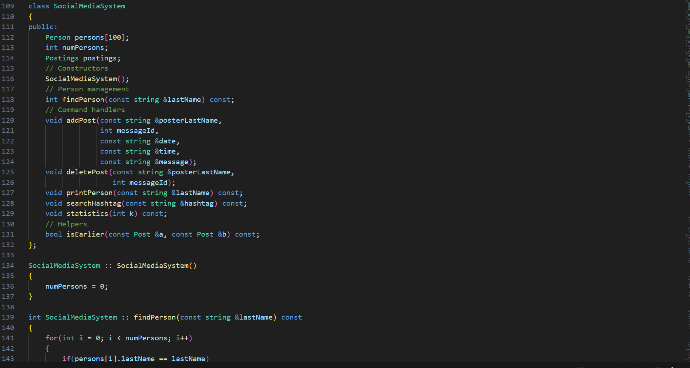

Array vs Linkedlist Research Project
Project to test when it is more efficient to use a linkedlist or an array depending on size and operation.
Java • Research • Data Structures

Mini Social Media Message System
Project where I created a mini social media system which can do various operations such as adding and deleting posts as well as searching for hashtags.
C++ • OOP • Data Structures